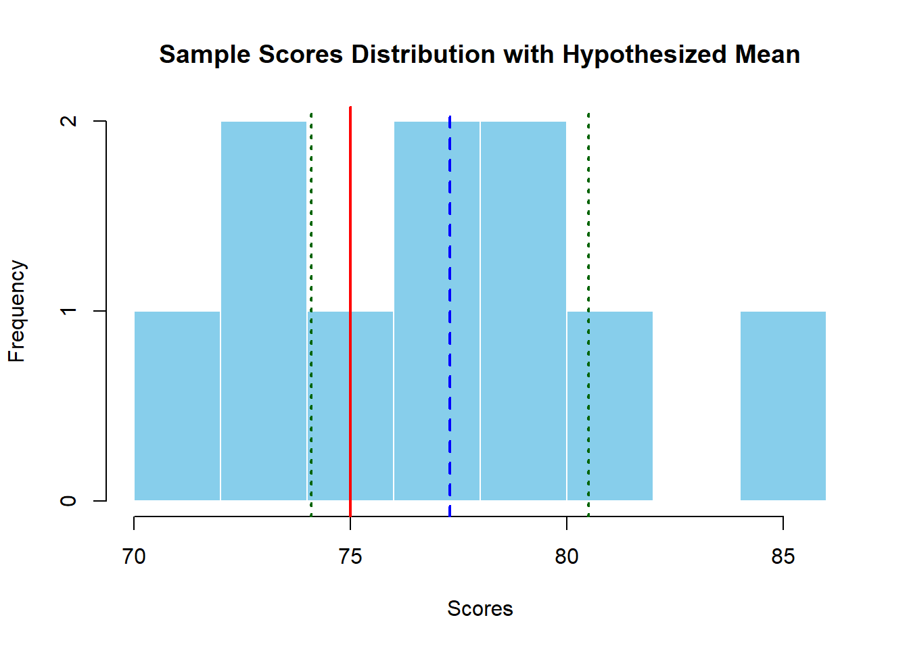
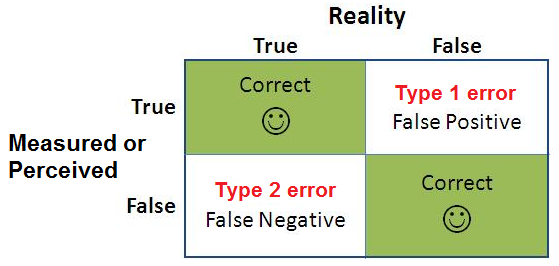
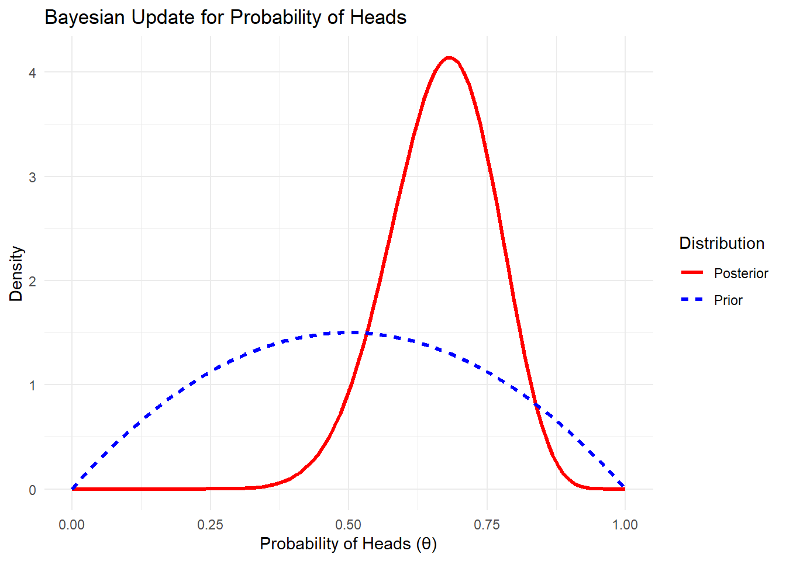
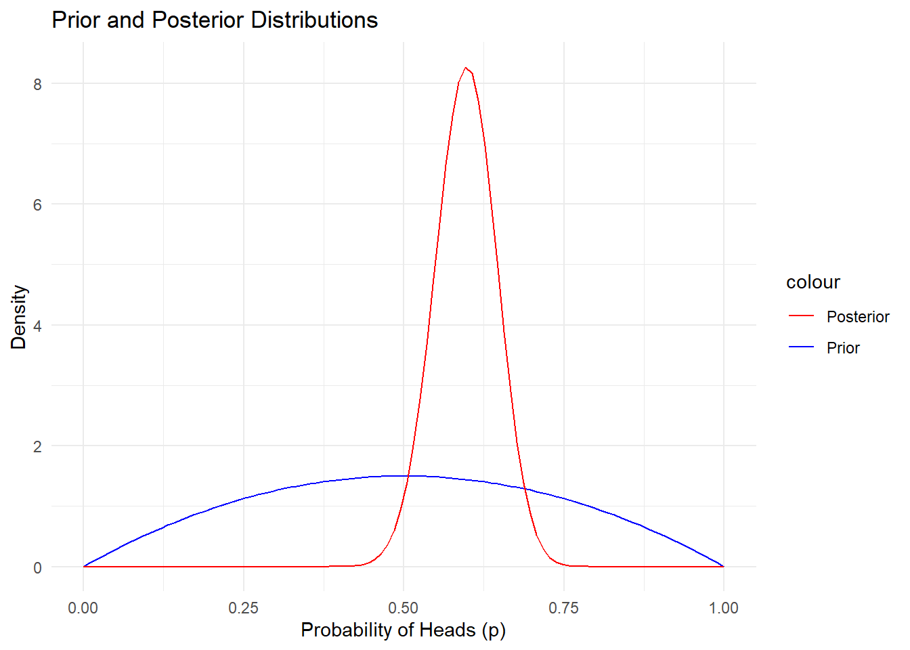
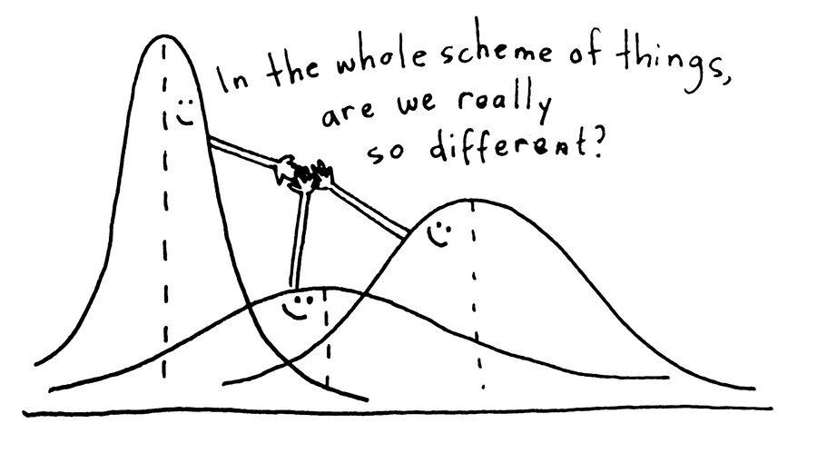
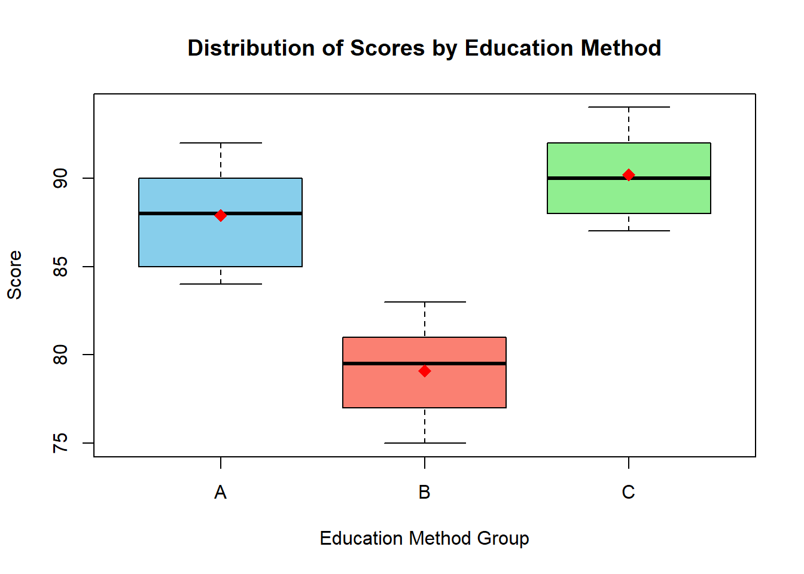

당시 연합군은 전투기가 격추되는 것을 줄이기 위해 손상된 전투기들의 데이터를 분석했습니다. 대부분의 전투기는 날개와 꼬리에 총탄이 많이 맞은 상태로 돌아왔고, 연구팀은 이 부위에 장갑을 강화해야 한다고 생각했죠. 그런데 통계학자 아브라함 발드(Abraham Wald)는 발상을 뒤집었습니다. 살아 돌아온 전투기들은 총알을 맞아도 생존할 수 있었던 부위에 손상을 입었다는 점을 지적하며, 격추된 전투기들은 아마도 다른 부위가 손상되어 돌아오지 못했을 가능성이 크다고 했습니다. 그래서 결론적으로 장갑은 덜 손상된 부위에 덧대어야 한다고 주장했죠. 이 분석은 전투기의 생존률을 크게 높였다고 알려져 있습니다.
통계적 추론: 표본(Sample) 데이터를 통해 모집단(Population)의 특성을 추정하고 이해하는 과정
1. Introduction to Statistical Inference
Statistical Inference is the process of drawing conclusions about population parameters based on a sample from the population. There are two main branches of statistical inference:
Estimation: Involves estimating population parameters (e.g., the mean or variance) using sample data.
Hypothesis Testing: Involves testing assumptions (hypotheses) about population parameters.
In other words, (in Korean)
Estimation (추정): 표본 데이터를 사용하여 모집단의 특정 모수(예: 평균, 분산 등)를 알아내고 추정하는 데 목적이 있음. 주된 목표는 모집단의 실제 모수 값을 가능한 정확히 근사하는 것. 예를 들어, 모집단의 평균을 추정하기 위해 표본의 평균을 사용.
Hypothesis Testing (가설 검정): 모집단의 모수에 대한 특정한 주장이 참인지 판단하는 데 목적이 있음. 예를 들어, 모집단 평균이 특정 값(예: 50)인지 아닌지를 확인하고자 할 때, 귀무 가설과 대립 가설을 세워 이를 테스트.
The objective is to make reliable conclusions about a population, recognizing that sample data inherently contains some uncertainty.
2. Point Estimation
A point estimate provides a single value as an estimate of a population parameter. The most common point estimators are:
Sample Mean (\(\hat{\mu}\)): An estimate of the population mean (\(\mu\)).
Sample Variance (\(\hat{\sigma}\)): An estimate of the population variance (\(\sigma^2\)).
# Generate random sample dataset.seed(123)data <-rnorm(100, mean =50, sd =10)# Calculate point estimatessample_mean <-mean(data)sample_variance <-var(data)cat("Sample Mean:", sample_mean, "\n")
Sample Mean: 50.90406
cat("Sample Variance:", sample_variance, "\n")
Sample Variance: 83.32328
3. Interval Estimation (Confidence Intervals)
A confidence interval provides a range of values that is likely to contain the population parameter with a specified level of confidence (e.g., 95%).
For the sample mean, a 95% confidence interval can be calculated as:
\[
CI = \hat{\mu} \pm z_{\alpha/2} \cdot \frac{\hat{\sigma}}{\sqrt{n}}
\]
Where:
\(\hat{\mu}\) is the sample mean,
\(z_{\alpha/2}\) is the critical value (임계값) from the standard normal distribution (1.96 for 95% confidence),
\(z_{\alpha/2}\)는 표준 정규 분포에서 특정 신뢰 수준(예: 95%, 99%)을 반영하는 값으로, 예를 들어, 95% 신뢰 구간을 구할 때는 \(\alpha = 0.05\)이며, \(z_{0.025}\)는 약 1.96.
신뢰 구간이 얼마나 넓어질지 결정하는 요소
\(\hat{\sigma}\) is the sample standard deviation,
\(n\) is the sample size.
표준 오차는 표본 크기가 커질수록 작아지며, 이는 표본 평균이 모집단 평균에 더 근접함을 의미.
R Code for Confidence Interval:
# Function to calculate a 95% confidence intervalconfidence_interval <-function(data) { n <-length(data) mean <-mean(data) sd <-sd(data) error <-qnorm(0.975) * sd /sqrt(n) lower_bound <- mean - error upper_bound <- mean + errorreturn(c(lower_bound, upper_bound))}# Generate sample dataset.seed(123)data <-rnorm(100, mean =50, sd =10)# Calculate the 95% confidence intervalci <-confidence_interval(data)cat("95% Confidence Interval:", ci, "\n")
95% Confidence Interval: 49.11497 52.69315
4. Hypothesis Testing
Hypothesis Testing involves testing an assumption (hypothesis) about a population parameter. The two types of hypotheses are:
Null Hypothesis (H₀): The statement being tested, usually a statement of no effect or no difference.
Alternative Hypothesis (H₁): The statement you want to test, indicating an effect or difference.
Steps in Hypothesis Testing:
State the null and alternative hypotheses.
Choose a significance level (\(\alpha\), usually 0.05).
Compute a test statistic.
Determine the critical value or p-value.
Make a decision: reject or fail to reject the null hypothesis.
Test Statistic for a Mean:
For large samples (n > 30), we use the z-statistic:
\[
Z = \frac{\hat{\mu} - \mu_0}{\hat{\sigma} / \sqrt{n}}
\]
Where:
\(\hat{\mu}\) is the sample mean,
\(\mu_0\) is the population mean under the null hypothesis,
\(\hat{\sigma}\) is the sample standard deviation.
R Code for Hypothesis Testing (One-Sample t-test):
# Sample datascores <-c(78, 82, 75, 80, 77, 73, 70, 74, 85, 79) # Replace with your data# Hypothesized population meanmu_0 <-75# Hypothesized mean to test against# Perform the one-sample t-testt_test_result <-t.test(scores, mu = mu_0)# View the resultprint(t_test_result)
One Sample t-test
data: scores
t = 1.6259, df = 9, p-value = 0.1384
alternative hypothesis: true mean is not equal to 75
95 percent confidence interval:
74.09994 80.50006
sample estimates:
mean of x
77.3
# Visualize the sample distribution with a histogramhist(scores, main ="Sample Scores Distribution with Hypothesized Mean", xlab ="Scores", col ="skyblue", border ="white", breaks =10)# Add a line for the sample meanabline(v =mean(scores), col ="blue", lwd =2, lty =2)text(mean(scores), par("usr")[4], labels ="Sample Mean", pos =3, col ="blue")# Add a line for the hypothesized meanabline(v = mu_0, col ="red", lwd =2)text(mu_0, par("usr")[4], labels ="Hypothesized Mean", pos =3, col ="red")# Add confidence interval linesci <- t_test_result$conf.intabline(v = ci[1], col ="darkgreen", lwd =2, lty =3)abline(v = ci[2], col ="darkgreen", lwd =2, lty =3)text(ci[1], par("usr")[4], labels ="95% CI Lower", pos =3, col ="darkgreen")text(ci[2], par("usr")[4], labels ="95% CI Upper", pos =3, col ="darkgreen")

5. Types of Errors
In hypothesis testing, we can make two types of errors:

Type I Error: Rejecting the null hypothesis when it is true (false positive).
Type II Error: Failing to reject the null hypothesis when it is false (false negative).
The power of a test is the probability of correctly rejecting a false null hypothesis (1 - probability of Type II error).
검정력(Power of a Test)은 잘못된 귀무 가설을 정확하게 기각할 확률. 즉, 귀무 가설이 실제로 틀렸을 때, 이를 제대로 알아채고 기각할 가능성을 나타내는 지표.
검정력은 수식으로 1 - 제2종 오류의 확률
제2종 오류는 귀무 가설이 틀렸음에도 불구하고 이를 기각하지 못하는 실수
따라서 검정력은 제2종 오류를 피하고, 잘못된 가설을 제대로 기각할 확률
ML 성능 측정 지표의 Recall (Sensitivity 민감도, 또는 재현율)과 같음.
참인 값을 놓치지 않는 능력
실제로 양성인 모든 데이터 중에서 모델이 양성이라고 정확히 예측한 비율
R Code for Power Calculation:
한 연구자가 특정 운동 프로그램이 체력에 미치는 효과를 알아보기 위해 운동 그룹과 대조 그룹(운동하지 않는 그룹)을 비교하는 연구를 설계했다고 가정해보자. 연구자는 운동 프로그램의 효과가 중간 정도(효과 크기 d = 0.5)일 것으로 예상한다. 각 그룹에는 100명씩의 참여자가 포함되며, 연구자는 5% 유의 수준에서 검정을 수행하려고 한다. 연구자는 검정력(power)이 충분히 높아야만, 즉 잘못된 귀무 가설을 기각할 확률이 높아야만 연구 결과의 신뢰성을 높일 수 있기 때문에 검정력을 계산하게 된다. 검정력이 80% 이상일 때 보통 신뢰할 만한 연구라고 간주되기 때문이다.
# Calculate the power of a t-testlibrary(pwr)# 효과 크기, 표본 크기, 유의 수준, 양측 검정을 설정하여 검정력 계산power_result <-pwr.t.test(d =0.5, n =100, sig.level =0.05, type ="two.sample")# Output the power of the testprint(power_result)
Two-sample t test power calculation
n = 100
d = 0.5
sig.level = 0.05
power = 0.9404272
alternative = two.sided
NOTE: n is number in *each* group
검정력 (power): 0.94, 즉 94%. 이 값은 연구자가 설정한 조건(효과 크기 0.5, 표본 크기 100명, 유의 수준 0.05)에서, 운동 프로그램이 실제로 효과가 있다면 이를 94% 확률로 감지할 수 있다는 의미.
검정력이 80%를 훨씬 넘는 94%로 나타났기 때문에, 연구자는 이 연구 디자인이 충분히 강력하다고 결론 내릴 수 있음. 만약 효과가 존재한다면, 94%의 확률로 이를 올바르게 발견할 수 있기 때문.
Frequentist vs. Bayesian
어느 날, 당신은 우산을 가져갈지 말지 고민하고 있습니다. 기상청은 “오늘 비가 올 확률이 30%”라고 알려주었다면, Frequentist와 Bayesian 의 접근 방식은 어떻게 달라질까?
Frequentist는 이 30%를 장기적인 빈도로 해석한다. “만약 오늘과 비슷한 조건에서 100번을 반복한다면, 그중 30번은 비가 내릴 것이다.” 즉, Frequentist 입장에서는 오늘이 정확히 비가 오는 날인지 아닌지는 모른 채 비가 올 가능성을 반복적인 실험 결과로 이해하는 것이다.
Bayesian은 이 30%를 현재까지의 정보에 기반한 주관적인 확률로 해석한다. “오늘 비가 올 확률이 30%”라는 정보를 현재까지의 모든 정보를 반영한 최신의 신뢰도로 보는 것이다. 즉, Bayesian 입장에서는 현재 조건에 대해 알고 있는 정보에 따라 오늘 비가 올 가능성을 30%로 설정하게 되고 새로운 정보가 들어오면(예: 오후에 구름이 더 많이 끼기 시작) 비 확률을 즉시 업데이트한다.
일상에서 대부분의 사람들은 Bayesian적인 사고 방식에 더 가깝게 행동한다. 우리는 보통 새로운 정보를 받으면 기존 믿음이나 추정치를 업데이트하면서 판단을 내리기 때문. Frequentist 접근은 장기적인 반복 실험을 전제로 하는데, 이는 일상생활에서는 어렵거나 의미가 없는 경우가 많다. 예를 들어 친구가 약속에 늦을 확률을 알기 위해 친구가 여러 번 동일한 상황에서 약속을 지키거나 늦는 실험을 반복할 수는 없기 때문.
1. Introduction
In statistics, two major schools of thought exist: Frequentist and Bayesian. Each has its own interpretation of probability, methods of inference, and philosophy. Let’s explore the key differences, along with some intuitive examples and R code for both approaches.
2. Historical Background
Frequentist Approach
Origins: The frequentist approach is rooted in the early 20th century, developed by statisticians such as Ronald A. Fisher, Jerzy Neyman, and Egon Pearson.
Philosophy: Frequentists define probability as the long-run frequency of events. They believe that population parameters are fixed but unknown, and they use data from random samples to infer these fixed parameters.
Example: If you flip a coin many times, the frequentist interpretation is that the probability of heads is the long-term proportion of heads after infinite flips.
Bayesian Approach
Origins: Bayesian statistics is named after Rev. Thomas Bayes, an 18th-century mathematician. However, it wasn’t until the 20th century that statisticians like Harold Jeffreys and Leonard J. Savage developed Bayesian ideas more thoroughly.
Philosophy: In Bayesian statistics, probability represents a degree of belief or certainty about an event. Bayesian inference updates this belief as new data becomes available, using Bayes’ Theorem.
Example: If you believe that the coin is biased based on previous information (e.g., 60% heads in past experiments), you incorporate that into your analysis and update your belief as new flips are observed.
확률은 수 많은 실험에 의한 빈도가 아니라 내가 어떤 사건이 일어날지에 대한 ’믿음의 정도’로 표현.
3. Philosophical Differences
Frequentist Philosophy
Objective: Population parameters (like the mean or variance) are fixed but unknown, and we use sampling to make inferences about these parameters.
Probability: The probability of an event is the long-run frequency with which the event occurs over repeated experiments.
Hypothesis Testing: Frequentists use p-values to test hypotheses and make decisions without explicitly incorporating prior knowledge.
For example, in hypothesis testing, you might ask: “Given this data, how likely is it to observe this result if the null hypothesis were true?”
Bayesian Philosophy
Subjective: Bayesian statistics treats parameters as random variables with their own distributions, reflecting uncertainty or prior beliefs.
Probability: Probability represents a degree of belief in an event, which is updated as new data is observed.
Bayes’ Theorem: The cornerstone of Bayesian inference, Bayes’ Theorem allows us to update prior beliefs about a parameter in light of new evidence.
For example, you might ask: “Given this data, how should I update my belief about the true parameter?”
4. Bayes’ Theorem
The key formula that defines Bayesian inference is Bayes’ Theorem: \[
P(\theta | X) = \frac{P(X | \theta) P(\theta)}{P(X)}
\] Where:
\(P(\theta | X)\) is the posterior probability of the parameter \(\theta\) given data \(X\),
\(P(X | \theta)\) is the likelihood, the probability of observing the data given \(\theta\),
\(P(\theta)\) is the prior probability, representing our belief about \(\theta\) before seeing the data,
\(P(X)\) is the marginal likelihood, a normalizing constant that ensures the posterior is a valid probability distribution.
Example:
If you’re trying to estimate the probability of getting heads from a potentially biased coin, the Bayesian approach would combine your prior belief (say, you think the coin might be biased towards heads) with the actual results from a series of flips to calculate an updated belief (the posterior).
library(ggplot2)# 1. Prior belief: we think the coin might be biased towards heads# Setting an initial prior with Beta distribution: Beta(2, 2) - a slight bias towards headsprior_a <-2# Prior heads count (pseudo-count)prior_b <-2# Prior tails count (pseudo-count)# 2. Observed data: results from flipping the coin# Let's assume we flip the coin 20 times and get 14 heads and 6 tailsobserved_heads <-14observed_tails <-6# 3. Update the prior with observed data to get the posteriorposterior_a <- prior_a + observed_headsposterior_b <- prior_b + observed_tails# 4. Plot the prior and posterior distributions to visualize belief updatestheta <-seq(0, 1, length.out =100) # Possible values of the probability of heads# Calculate density for prior and posteriorprior_density <-dbeta(theta, prior_a, prior_b)posterior_density <-dbeta(theta, posterior_a, posterior_b)# Create a data frame for plottingdata <-data.frame(theta =rep(theta, 2),density =c(prior_density, posterior_density),Distribution =rep(c("Prior", "Posterior"), each =length(theta)))head(data)
# Plot the prior and posteriorggplot(data, aes(x = theta, y = density, color = Distribution, linetype = Distribution)) +geom_line(size =1.2) +labs(title ="Bayesian Update for Probability of Heads",x ="Probability of Heads (θ)",y ="Density") +theme_minimal() +scale_color_manual(values =c("Prior"="blue", "Posterior"="red"))
Warning: Using `size` aesthetic for lines was deprecated in ggplot2 3.4.0.
ℹ Please use `linewidth` instead.

Prior 설정: Beta(2, 2) 분포를 사전 확률로 설정하여 약간 앞면에 치우친 믿음을 반영. prior_a와 prior_b는 각각 사전 앞면과 뒷면의 “pseudo-count”로 설정.
관찰 데이터: 동전을 20번 던져 14번 앞면이 나오고 6번 뒷면이 나온 것을 반영.
Posterior 업데이트: 관찰 데이터를 반영해 사후 확률 분포를 업데이트. posterior_a = prior_a + observed_heads, posterior_b = prior_b + observed_tails로 계산.
5. Intuitive Examples
Example 1: Coin Toss (Frequentist vs. Bayesian)
Frequentist Approach:
The frequentist approach to estimating the probability of heads (p) in a coin toss would involve collecting data (number of heads and tails) and estimating p using the sample proportion:
\[
\hat{p} = \frac{\text{number of heads}}{\text{total flips}}
\] Frequentists would not incorporate any prior beliefs and rely solely on the data at hand.
Bayesian Approach:
Bayesians would start with a prior distribution for p, reflecting their belief about the probability of heads before observing any data. After flipping the coin several times, they would update this belief using Bayes’ Theorem to obtain the posterior distribution for p.
R Code for Coin Toss (Frequentist vs. Bayesian)
# Frequentist Approach - Coin Tossset.seed(123)n <-100# Number of flipsp_true <-0.6# True probability of headsflips <-rbinom(n, size =1, prob = p_true)freq_estimate <-mean(flips)cat("Frequentist Estimate of p:", freq_estimate, "\n")
Frequentist Estimate of p: 0.6
# Bayesian Approach - Coin Toss with Beta Priorlibrary(ggplot2)# Prior: Beta(2, 2) - Reflects prior belief that p is likely around 0.5prior_alpha <-2prior_beta <-2# Posterior: Beta(alpha + heads, beta + tails)heads <-sum(flips)tails <- n - headsposterior_alpha <- prior_alpha + headsposterior_beta <- prior_beta + tails# Visualize the Prior and Posterior Distributionsp_vals <-seq(0, 1, length.out =100)prior_dist <-dbeta(p_vals, prior_alpha, prior_beta)posterior_dist <-dbeta(p_vals, posterior_alpha, posterior_beta)df <-data.frame(p_vals, prior_dist, posterior_dist)ggplot(df, aes(x = p_vals)) +geom_line(aes(y = prior_dist, color ="Prior")) +geom_line(aes(y = posterior_dist, color ="Posterior")) +labs(title ="Prior and Posterior Distributions",x ="Probability of Heads (p)", y ="Density") +scale_color_manual(values =c("Prior"="blue", "Posterior"="red")) +theme_minimal()

R Code for Bayesian estimation of regression
# Install and load the rstanarm package if not already installedif(!require("rstanarm")) install.packages("rstanarm", dependencies=TRUE); library("rstanarm")
Loading required package: rstanarm
Loading required package: Rcpp
This is rstanarm version 2.32.1
- See https://mc-stan.org/rstanarm/articles/priors for changes to default priors!
- Default priors may change, so it's safest to specify priors, even if equivalent to the defaults.
- For execution on a local, multicore CPU with excess RAM we recommend calling
options(mc.cores = parallel::detectCores())
# Sample data: Suppose we have a dataset with predictor X and response Yset.seed(123)n <-100X <-rnorm(n, mean =5, sd =2)Y <-3+1.5* X +rnorm(n, sd =1)# Fit Bayesian linear regressionbayesian_model <-stan_glm(Y ~ X, data =data.frame(X, Y),prior =normal(0, 5), # Prior for coefficientsprior_intercept =normal(0, 10), # Prior for interceptprior_aux =cauchy(0, 2), # Prior for error termchains =4, iter =2000, warmup =500, seed =123)
# Summary of the Bayesian regressionprint(bayesian_model)
stan_glm
family: gaussian [identity]
formula: Y ~ X
observations: 100
predictors: 2
------
Median MAD_SD
(Intercept) 3.0 0.3
X 1.5 0.1
Auxiliary parameter(s):
Median MAD_SD
sigma 1.0 0.1
------
* For help interpreting the printed output see ?print.stanreg
* For info on the priors used see ?prior_summary.stanreg
조금 더 자세한 예제를 통한 학습
set.seed(123)# 1. 가상의 데이터 생성n <-100# 샘플 크기X <-rnorm(n, mean =5, sd =2)true_intercept <-3true_slope <-1.5Y <- true_intercept + true_slope * X +rnorm(n, sd =1)# 2. 사전 분포 설정 (여기서는 단순히 정규 분포로 가정)prior_mean_intercept <-0prior_sd_intercept <-10prior_mean_slope <-0prior_sd_slope <-10proposal_sd <-0.1# 제안 분포의 표준편차# 3. 초기값 설정n_iter <-5000# MCMC 반복 수intercept_samples <-numeric(n_iter)slope_samples <-numeric(n_iter)# 초기 추정치 설정current_intercept <-0current_slope <-0current_log_likelihood <-sum(dnorm(Y, mean = current_intercept + current_slope * X, sd =1, log =TRUE))# 4. MCMC 과정 (Metropolis-Hastings 알고리즘 사용)for (i in1:n_iter) {# 4.1. 새로운 제안값 생성 (정규 분포 제안 분포 사용) proposed_intercept <-rnorm(1, mean = current_intercept, sd = proposal_sd) proposed_slope <-rnorm(1, mean = current_slope, sd = proposal_sd)# 4.2. 제안된 값에서의 우도 계산 proposed_log_likelihood <-sum(dnorm(Y, mean = proposed_intercept + proposed_slope * X, sd =1, log =TRUE))# 4.3. 사전 분포 확률 계산 (정규 분포 가정) prior_current <-dnorm(current_intercept, prior_mean_intercept, prior_sd_intercept, log =TRUE) +dnorm(current_slope, prior_mean_slope, prior_sd_slope, log =TRUE) prior_proposed <-dnorm(proposed_intercept, prior_mean_intercept, prior_sd_intercept, log =TRUE) +dnorm(proposed_slope, prior_mean_slope, prior_sd_slope, log =TRUE)# 4.4. 사후 확률 비율 계산 (Metropolis-Hastings acceptance ratio) log_acceptance_ratio <- (proposed_log_likelihood + prior_proposed) - (current_log_likelihood + prior_current)# 4.5. 제안값을 수용할지 결정if (log(runif(1)) < log_acceptance_ratio) { current_intercept <- proposed_intercept current_slope <- proposed_slope current_log_likelihood <- proposed_log_likelihood }# 4.6. 현재 값을 저장 intercept_samples[i] <- current_intercept slope_samples[i] <- current_slope}# 5. 결과 시각화par(mfrow =c(2, 2))plot(intercept_samples, type ="l", main ="Trace Plot: Intercept", xlab ="Iteration", ylab ="Intercept")plot(slope_samples, type ="l", main ="Trace Plot: Slope", xlab ="Iteration", ylab ="Slope")hist(intercept_samples, main ="Posterior Distribution: Intercept", xlab ="Intercept", breaks =30, col ="skyblue")hist(slope_samples, main ="Posterior Distribution: Slope", xlab ="Slope", breaks =30, col ="skyblue")
6. Example 2: Hypothesis Testing (Frequentist vs. Bayesian)
Frequentist Hypothesis Testing
In frequentist hypothesis testing, we define a null hypothesis H0 (e.g., the population mean is zero) and use a test statistic to determine whether we reject H0 based on a significance level (e.g., \(\alpha = 0.05\)).
왜 귀무 가설이 필요한가?
Frequentist 접근의 기본 철학은 데이터가 귀무 가설이 참이라는 가정하에서 얼마나 일어날 가능성이 있는지를 평가하는 데 있다. 이 과정에서 p-value를 통해 관찰된 데이터가 귀무 가설 하에서 얼마나 극단적인지(혹은 드문지)를 확인하고, 이를 바탕으로 귀무 가설을 기각할지 결정한다.
Bayesian Hypothesis Testing
In Bayesian hypothesis testing, we compute the posterior probability of the hypotheses and compare them directly. Instead of a p-value, we might calculate the Bayes Factor, which quantifies the evidence in favor of one hypothesis over another.
R Code for Hypothesis Testing (Frequentist vs. Bayesian)
# Frequentist T-testset.seed(123)data <-rnorm(100, mean =5, sd =2)t_test_result <-t.test(data, mu =0)print(t_test_result)
One Sample t-test
data: data
t = 28.378, df = 99, p-value < 2.2e-16
alternative hypothesis: true mean is not equal to 0
95 percent confidence interval:
4.818567 5.543057
sample estimates:
mean of x
5.180812
# Bayesian T-test using BayesFactor package# install.packages("BayesFactor")library(BayesFactor)
Loading required package: coda
Loading required package: Matrix
************
Welcome to BayesFactor 0.9.12-4.7. If you have questions, please contact Richard Morey (richarddmorey@gmail.com).
Type BFManual() to open the manual.
************
# Bayesian testbf <-ttestBF(x = data, mu =0)print(bf)
Frequentist statistics is based on the idea of long-run frequencies, and parameters are treated as fixed. Estimations and hypothesis testing are based purely on observed data without incorporating prior beliefs.
Bayesian statistics incorporates prior knowledge and updates this belief using data. Parameters are treated as random variables with their own probability distributions.
Frequentist tools include p-values and confidence intervals, while Bayesian tools involve posterior distributions and Bayes Factors.
ANOVA (Analysis of Variance)

여러 집단 간의 평균 차이를 분석하기 위한 통계적 기법. 두 개 이상의 집단이 있을 때, 이 집단들의 평균이 동일한지를 검정하는 데 사용됨. ANOVA는 일반적으로 F-검정을 통해 수행되며, 집단 간의 분산과 집단 내의 분산을 비교하여 집단 평균의 차이가 통계적으로 유의미한지를 결정.
ANOVA의 기본 개념
귀무가설 (H0): 모든 집단의 평균이 동일.
\[
H_0: \mu_1 = \mu_2 = \cdots = \mu_k
\]
대립가설 (H1): 적어도 하나의 집단의 평균이 다르다.
ANOVA의 원리
ANOVA는 총 변동을 두 부분으로 나누어 분석.
집단 간 변동 (Between-group variation): 각 집단의 평균이 전체 평균에서 얼마나 벗어나는지를 나타냄. 집단 간 변동이 크다면, 각 집단의 평균이 서로 다를 가능성이 높음.
집단 내 변동 (Within-group variation): 같은 집단 내에서 개별 데이터가 집단 평균에서 얼마나 벗어나는지를 나타냄. 이는 데이터의 무작위 오차로 설명할 수 있음.
예를 들어 세 집단 A, B, C가 있을 때, ANOVA 검정은 다음과 같은 경우에도 귀무 가설을 기각할 수 있음.
A, B는 비슷한데 C만 평균이 다른 경우
A, C는 비슷한데 B만 평균이 다른 경우
즉, 모든 집단이 다르지 않고 하나만 다르더라도 ANOVA는 그 차이를 감지하고, 귀무 가설을 기각할 가능성이 있음. ANOVA는 단순히 “모두 같지 않다”는 사실만을 감지하는 것이므로, 특정 집단이 다르게 보일 경우에도 유의미한 차이가 있다고 판단할 수 있음.
ANOVA의 F-통계량
ANOVA에서는 F-통계량을 계산하여 집단 간 평균 차이가 우연히 발생했는지를 검정. F-통계량은 집단 간 변동과 집단 내 변동의 비율로 계산.
\[
F = \frac{\text{Between-group variance}}{\text{Within-group variance}}
\]
집단 간 변동 (Between-group variance or Mean Square Between, MSB): 각 집단 평균이 전체 평균에서 벗어나는 정도.
score group
1 85 A
2 90 A
3 88 A
4 92 A
5 85 A
6 87 A
7 89 A
8 91 A
9 84 A
10 88 A
11 78 B
12 82 B
13 80 B
14 75 B
15 79 B
16 81 B
17 77 B
18 83 B
19 76 B
20 80 B
21 88 C
22 90 C
23 92 C
24 94 C
25 91 C
26 89 C
27 87 C
28 93 C
29 90 C
30 88 C
# 각 그룹의 평균mean_A <-mean(group_A)mean_B <-mean(group_B)mean_C <-mean(group_C)# 전체 평균overall_mean <-mean(data$score)# 1. 그룹 간 제곱합(SSB) 및 제곱 평균(MSB)n_A <-length(group_A) # 각 그룹의 표본 수n_B <-length(group_B)n_C <-length(group_C)SSB <- n_A * (mean_A - overall_mean)^2+ n_B * (mean_B - overall_mean)^2+ n_C * (mean_C - overall_mean)^2df_between <-3-1# 그룹 간 자유도MSB <- SSB / df_between# 2. 그룹 내 제곱합(SSW) 및 제곱 평균(MSW)SSW <-sum((group_A - mean_A)^2) +sum((group_B - mean_B)^2) +sum((group_C - mean_C)^2)df_within <-length(data$score) -3# 그룹 내 자유도MSW <- SSW / df_within# 3. F-통계량 계산F_statistic <- MSB / MSW# 결과 출력cat("그룹 간 제곱합(SSB):", SSB, "\n")
Df Sum Sq Mean Sq F value Pr(>F)
group 2 686.5 343.2 53.45 4.1e-10 ***
Residuals 27 173.4 6.4
---
Signif. codes: 0 '***' 0.001 '**' 0.01 '*' 0.05 '.' 0.1 ' ' 1
# Boxplot으로 각 그룹의 성적 분포 시각화boxplot(score ~ group, data = data,main ="Distribution of Scores by Education Method",xlab ="Education Method Group",ylab ="Score",col =c("skyblue", "salmon", "lightgreen"))# 평균선 추가means <-tapply(data$score, data$group, mean)points(1:3, means, col ="red", pch =18, cex =1.5)

ANOVA의 확장
일원 분산 분석 (One-way ANOVA): 위에서 설명한 것처럼 하나의 요인(그룹)에 대한 평균 차이를 분석.
이원 분산 분석 (Two-way ANOVA): 두 가지 요인(예: 성별과 교육 방법)이 종속 변수에 미치는 영향을 분석.
반복 측정 ANOVA: 동일한 개체에 대해 여러 번 반복 측정한 데이터를 분석.
Two-way ANOVA
두 개의 독립 변수(factor)가 종속 변수에 미치는 영향을 동시에 분석하는 방법. 예를 들어, 특정 교육 방법(교육 유형)과 성별이 학생 성적에 미치는 영향을 동시에 분석할 수 있음. Two-way ANOVA에서는 각 요인의 주 효과(main effects)와 두 요인의 상호작용 효과(interaction effect)를 분석할 수 있음.
# Step 1: 가상의 데이터 생성# 교육 방법(A, B)와 성별(Male, Female)이 학생 성적에 미치는 영향을 분석한다고 가정set.seed(123)n <-20# 각 그룹당 샘플 수# 그룹별 데이터 생성group_A_male <-rnorm(n, mean =80, sd =5)group_A_female <-rnorm(n, mean =85, sd =5)group_B_male <-rnorm(n, mean =75, sd =5)group_B_female <-rnorm(n, mean =90, sd =5)# 데이터프레임으로 결합data <-data.frame(score =c(group_A_male, group_A_female, group_B_male, group_B_female),method =factor(rep(c("A", "A", "B", "B"), each = n)),gender =factor(rep(c("Male", "Female", "Male", "Female"), each = n)))# Step 2: 데이터 확인head(data)
score method gender
1 77.19762 A Male
2 78.84911 A Male
3 87.79354 A Male
4 80.35254 A Male
5 80.64644 A Male
6 88.57532 A Male
# Step 3: Two-way ANOVA 수행anova_result <-aov(score ~ method * gender, data = data)# Step 4: 결과 요약 출력summary(anova_result)
Tukey multiple comparisons of means
95% family-wise confidence level
Fit: aov(formula = score ~ group, data = data)
$group
diff lwr upr p adj
B-A -8.8 -11.6100067 -5.989993 0.0000001
C-A 2.3 -0.5100067 5.110007 0.1244386
C-B 11.1 8.2899933 13.910007 0.0000000
# 집단 간 유의미한 차이를 표현하기 위한 그룹화tukey_cld <-multcompLetters4(anova_result, tukey_result)# 평균 계산 및 Tukey HSD 결과 결합mean_data <- data %>%group_by(group) %>%summarise(mean =mean(score)) %>%arrange(desc(mean))# Tukey HSD 결과를 시각적으로 표현하기 위한 레이블 추가mean_data$tukey_label <- tukey_cld$group$Letters# 박스플롯에 Tukey HSD 결과 레이블 추가ggplot(data, aes(x = group, y = score, fill = group)) +geom_boxplot(alpha =0.5) +geom_text(data = mean_data, aes(x = group, y = mean +1, label = tukey_label), color ="red", size =5) +labs(title ="Tukey HSD 결과와 그룹 간 평균 차이", x ="그룹", y ="성적") +theme_minimal()
multcompLetters4(): multcompView 패키지를 사용해 각 그룹 간 차이를 레이블로 표시. 이 레이블은 평균값 위에 표시되며, A, B, C 등으로 그룹 차이를 나타냄.
ANOVA에서 t-분포 시각화 및 t-값, p-값 계산
# 필요한 패키지 설치 및 로드library(shiny)library(ggplot2)library(gridExtra)
Attaching package: 'gridExtra'
The following object is masked from 'package:dplyr':
combine
# Shiny UIui <-fluidPage(titlePanel("ANOVA 및 t-검정 시각화"),sidebarLayout(sidebarPanel(sliderInput("mean_A", "A 그룹 평균", min =50, max =100, value =70),sliderInput("sd_A", "A 그룹 표준편차", min =1, max =30, value =10),sliderInput("mean_B", "B 그룹 평균", min =50, max =100, value =75),sliderInput("sd_B", "B 그룹 표준편차", min =1, max =30, value =10),actionButton("run", "분석 수행") ),mainPanel(plotOutput("distPlot"),uiOutput("calculationDisplay"), # 수식과 계산 과정 출력verbatimTextOutput("finalResult") # 최종 결과 출력 ) ))# Shiny Serverserver <-function(input, output) {observeEvent(input$run, {# 데이터 생성 A_data <-rnorm(30, input$mean_A, input$sd_A) # A 그룹 데이터 B_data <-rnorm(30, input$mean_B, input$sd_B) # B 그룹 데이터# 데이터를 하나의 데이터 프레임으로 결합 data <-data.frame(score =c(A_data, B_data),group =factor(rep(c("A", "B"), each =30)) )# t-test 수행 (두 그룹 간 비교) t_test_result <-t.test(A_data, B_data)# t-검정에서 필요한 값 계산 t_value <- t_test_result$statistic df <- t_test_result$parameter p_value <- t_test_result$p.value# t-분포 그리기 위한 x 값 범위 설정 x_vals <-seq(-4, 4, length.out =1000)# t-분포의 밀도 함수 값 계산 t_dist <-dt(x_vals, df = df)# t-분포 그래프 그리기if(t_value >=0){t_dist_plot <-ggplot(data.frame(x = x_vals, y = t_dist), aes(x = x, y = y)) +geom_line(color ="blue", size =1) +# t-분포 곡선geom_area(data =subset(data.frame(x = x_vals, y = t_dist), x >= t_value), aes(x = x, y = y), fill ="red", alpha =0.5) +# t-값 오른쪽 영역geom_area(data =subset(data.frame(x = x_vals, y = t_dist), x <=-t_value), aes(x = x, y = y), fill ="red", alpha =0.5) +# t-값 왼쪽 영역geom_vline(xintercept =c(-t_value, t_value), linetype ="dashed", color ="black") +# t-값 위치 표시 (양쪽)labs(title ="t-분포와 t-검정 결과", x ="t-값", y ="밀도") +annotate("text", x = t_value +0.2, y =0.1, label =paste("t =", round(t_value, 2)), color ="black") +# t-값 레이블annotate("text", x =-t_value -0.2, y =0.1, label =paste("t =", round(-t_value, 2)), color ="black") +# t-값 레이블theme_minimal() } else {t_dist_plot <-ggplot(data.frame(x = x_vals, y = t_dist), aes(x = x, y = y)) +geom_line(color ="blue", size =1) +# t-분포 곡선geom_area(data =subset(data.frame(x = x_vals, y = t_dist), x >=-t_value), aes(x = x, y = y), fill ="red", alpha =0.5) +# t-값 오른쪽 영역geom_area(data =subset(data.frame(x = x_vals, y = t_dist), x <= t_value), aes(x = x, y = y), fill ="red", alpha =0.5) +# t-값 왼쪽 영역geom_vline(xintercept =c(-t_value, t_value), linetype ="dashed", color ="black") +# t-값 위치 표시 (양쪽)labs(title ="t-분포와 t-검정 결과", x ="t-값", y ="밀도") +annotate("text", x = t_value +0.2, y =0.1, label =paste("t =", round(t_value, 2)), color ="black") +# t-값 레이블annotate("text", x =-t_value -0.2, y =0.1, label =paste("t =", round(-t_value, 2)), color ="black") +# t-값 레이블theme_minimal() }# 수식과 계산 과정 출력 output$calculationDisplay <-renderUI({withMathJax(HTML(paste("<h3>t-검정 계산 과정</h3>","<p>t-값 계산:</p>","\\[ t = \\frac{\\bar{X}_A - \\bar{X}_B}{\\sqrt{\\frac{s_A^2}{n_A} + \\frac{s_B^2}{n_B}}} \\]","<p>t-값: \\( t = ", round(t_value, 3), " \\)</p>","<p>자유도(df): \\( df = ", round(df, 0), " \\)</p>","<p>p-값 계산: \\( p = 2 \\times P(T > |t|) \\)</p>","<p>p-값: \\( p = ", round(p_value, 5), " \\)</p>" ))) })# 최종 결과 출력 (귀무가설 기각 여부) output$finalResult <-renderText({if (p_value <0.05) {paste("t-값이", round(t_value, 3), "이고 p-값이", round(p_value, 5),"이므로 귀무가설을 기각할 수 있습니다. 즉, A 그룹과 B 그룹 간의 평균 차이가 통계적으로 유의미합니다.") } else {paste("t-값이", round(t_value, 3), "이고 p-값이", round(p_value, 5),"이므로 귀무가설을 기각할 수 없습니다. \n 즉, A 그룹과 B 그룹 간의 평균 차이가 통계적으로 유의미하지 않습니다.") } })# t-분포와 데이터 분포 시각화 output$distPlot <-renderPlot({# 박스플롯과 t-분포 그래프 함께 그리기 box_plot <-ggplot(data, aes(x = group, y = score, fill = group)) +geom_boxplot(alpha =0.5) +labs(title ="A 그룹과 B 그룹의 성적 분포", x ="그룹", y ="성적") +theme_minimal()grid.arrange(box_plot, t_dist_plot, ncol =1) }) })}# Shiny 앱 실행# shinyApp(ui = ui, server = server)
Experimental Design
Experimental design is the process of planning an experiment to ensure that the results can effectively address the research questions posed. A well-designed experiment allows researchers to isolate the effects of independent variables and control for confounding factors, leading to more valid conclusions.
Key Components of Experimental Design:
Independent Variable (IV): The variable that is manipulated to observe its effect on the dependent variable. In a 2x2 design, there are two independent variables, each with two levels.
Dependent Variable (DV): The outcome or response that is measured to determine the effect of the independent variables.
Control Variables: Factors that are kept constant to avoid influencing the results.
Random Assignment: The process of assigning participants to experimental conditions in a random manner to ensure that any differences between groups are due to the manipulation of the independent variable rather than pre-existing differences.
2x2 Factorial Design
A 2x2 factorial design is one of the simplest forms of experimental design where two independent variables, each with two levels, are manipulated simultaneously. This design allows researchers to examine:
The main effects of each independent variable on the dependent variable.
The interaction effect between the two independent variables, which explores whether the effect of one independent variable on the dependent variable depends on the level of the other independent variable.
2x2 Design Structure:
Factor 1: The first independent variable (e.g., treatment type), which has two levels (e.g., placebo and drug).
Factor 2: The second independent variable (e.g., time of administration), which also has two levels (e.g., morning and evening).
This creates four possible experimental conditions:
Treatment A in the morning.
Treatment A in the evening.
Treatment B in the morning.
Treatment B in the evening.
Imagine a study examining the effects of caffeine (factor 1: with or without caffeine) and time of day (factor 2: morning or evening) on reaction time (the dependent variable). This 2x2 design will allow the researcher to investigate:
The main effect of caffeine (Does caffeine improve reaction time?).
The main effect of time of day (Is reaction time better in the morning than in the evening?).
The interaction effect (Is the effect of caffeine different in the morning compared to the evening?).
2x2 실험 연구의 표본 크기 계산
# 패키지 설치 및 로드if(!require("pwr")) install.packages("pwr", dependencies =TRUE)library(pwr)# 효과 크기 (Effect Size)# 일반적으로 Cohen의 기준을 사용합니다. 예를 들어, 중간 크기의 효과 크기 = 0.25effect_size <-0.25# 필요에 따라 변경# 유의 수준 (Significance Level)alpha <-0.05# 일반적으로 0.05 사용# 검정력 (Power)power <-0.8# 일반적으로 0.8 또는 0.9 사용# 2x2 실험에 필요한 표본 크기 계산sample_size <-pwr.anova.test(k =4, # 총 4개 그룹 (2x2 디자인)f = effect_size, sig.level = alpha, power = power)# 결과 출력cat("각 그룹당 필요한 표본 크기:", ceiling(sample_size$n), "\n")
각 그룹당 필요한 표본 크기: 45
효과 크기 설정 (effect_size): Cohen의 기준에 따라 작은 효과 크기(0.1), 중간 효과 크기(0.25), 큰 효과 크기(0.4)를 선택할 수 있음. 예제에서는 중간 정도의 효과 크기인 0.25로 설정.
유의 수준 (alpha): 일반적으로 0.05로 설정하여, 5%의 유의 수준에서 검정을 수행
검정력 (power): 0.8로 설정하여, 실제 효과가 있는 경우 이를 80%의 확률로 감지할 수 있도록 함.
pwr.anova.test 함수 사용: 2x2 디자인이므로 총 4개 그룹에 대해 표본 크기를 계산.
Main Effects and Interaction Effects
Main Effects
The main effect of an independent variable is the effect that it has on the dependent variable, averaging across the levels of the other independent variable.
Main effect of IV1 (Caffeine): This effect examines whether, overall, participants who received caffeine had faster reaction times than those who did not, regardless of the time of day.
Main effect of IV2 (Time of Day): This effect looks at whether participants had faster reaction times in the morning than in the evening, regardless of whether they received caffeine.
Interaction Effects
An interaction effect occurs when the effect of one independent variable on the dependent variable changes depending on the level of the other independent variable. In a 2x2 factorial design, the interaction effect tests whether the impact of one factor depends on the presence or absence of the other factor.
Example: The interaction between caffeine and time of day might show that caffeine only improves reaction time in the evening, not in the morning. This would suggest that the effect of caffeine depends on the time of day.
Graphical Representation
A useful way to interpret interaction effects is through graphical representation. In a line plot, the presence of an interaction is typically indicated when the lines representing different levels of one factor are not parallel. If the lines are parallel, there is no interaction.
Between-Subjects vs. Within-Subjects Designs
Between-Subjects Design
In a between-subjects design, different participants are assigned to different experimental conditions. This means that each participant experiences only one condition of the experiment.
Advantages:
No carryover effects, as participants are only exposed to one condition.
Less participant fatigue since they experience fewer conditions.
Disadvantages:
More participants are required to maintain statistical power.
Greater potential for individual differences to influence the results.
Within-Subjects Design
In a within-subjects design, the same participants experience all the experimental conditions. This means that participants act as their own control, which reduces the influence of individual differences.
Advantages:
Requires fewer participants, as each participant experiences all conditions.
Greater statistical power due to reduced variability between conditions.
Disadvantages:
Potential for carryover effects, where the experience of one condition influences responses in subsequent conditions.
Participant fatigue can occur if the experiment is too long or demanding.
Carryover effect(이월 효과)
실험 연구에서 이전 조건이 이후 조건에 영향을 미치는 현상. 주로 반복 측정 디자인(repeated measures design)이나 교차 실험(crossover study)에서 나타나며, 두 개 이상의 조건을 순서대로 경험하는 실험에서 문제가 됨.
예를 들어, 피험자가 새로운 학습 방법(A)과 기존 학습 방법(B)을 순서대로 경험하는 연구를 가정,
피험자가 먼저 학습 방법 A를 경험한 후 학습 방법 B를 경험하면, 학습 방법 A에서 배운 내용이나 방식이 학습 방법 B를 평가할 때 영향을 줄 수 있음.
이렇게 되면 학습 방법 B의 순수한 효과를 평가하기 어려워지는데, 이는 학습 방법 A에서의 경험이 학습 방법 B로 이월되었기 때문.
Carryover Effect의 종류
학습 효과(Learning Effect): 초기 조건에서의 경험이 이후 조건에서 성과를 향상시키는 경우. 피험자가 실험 절차에 익숙해지거나 기술이 향상되어 이후 조건에서 더 좋은 성과를 낼 수 있음.
피로 효과(Fatigue Effect): 초기 조건에서의 경험으로 인해 피로가 누적되어 이후 조건에서 성과가 저하되는 경우.
잉여 효과(Residual Effect): 특정 조건의 효과가 사라지지 않고 이후 조건에 남아 있는 경우. 예를 들어, 약물 실험에서 특정 약물의 효과가 충분히 사라지지 않은 상태에서 다른 약물을 투여하면 잔여 효과가 새로운 약물의 효과에 영향을 줄 수 있음.
Carryover Effect를 줄이는 방법
워시오프 기간(washout period) 설정: 이전 조건의 효과가 사라질 시간을 확보하기 위해 두 조건 사이에 충분한 시간 간격을 둠.
조건의 순서를 무작위화(randomization): 조건을 다양한 순서로 제공하여 특정 순서에 의해 발생할 수 있는 carryover effect를 최소화. 예를 들어, 절반의 참가자는 A를 먼저 경험하고, 나머지 절반은 B를 먼저 경험하도록 하는 것.
교차 디자인(crossover design)에서의 통계적 보정: 실험 후 분석 단계에서 carryover effect를 고려하여 결과를 보정할 수 있음.
\(Y_{ij}\): 참가자 \(i\)가 \(j\)번째 기간에 수행한 결과 (outcome).
\(\text{Condition}_{ij}\): 조건 변수로, 각 기간에 A 또는 B 조건이 적용된 경우를 나타냅니다 (범주형 변수).
\(\text{Period}_{ij}\): 순서 변수로, 첫 번째와 두 번째 기간에 대한 변동성을 나타냅니다 (예: 1 또는 2).
\(\beta_0\): 전체 평균(intercept), 즉 절편.
\(\beta_1\): 조건 효과(Condition effect)로, A와 B 조건의 차이를 나타냄
조건(A 또는 B)에 따라 결과에 미치는 영향의 크기
\(\beta_2\): 순서 효과(Period effect)로, 첫 번째 기간과 두 번째 기간에 따른 효과 차이
\(u_i\): 참가자별 임의 효과(random effect)로, 참가자 \(i\)의 개인적 편차를 나타내며, 이는 참가자 간의 차이를 반영
\(u_i\)는 임의 효과로, \(u_i \sim N(0, \sigma_u^2)\) 의 정규 분포를 따른다고 가정
임의 효과의 분산\(\sigma_u^2\): \(u_i\)가 개체마다 얼마나 다른지를 설명하는 분산. (우리가 추정하려고 하는 것은 임의 효과의 분산)
\(\epsilon_{ij}\): 오차항(residual)으로, 참가자 \(i\)가 \(j\)번째 기간에 겪는 랜덤 오차, 독립적으로 정규 분포를 따름.
# 가상의 데이터 생성library(lme4)data <-data.frame(participant =rep(1:10, each =2), # 참가자 IDperiod =rep(1:2, times =10), # 각 조건의 순서 (1: 첫 번째 조건, 2: 두 번째 조건)condition =rep(c("A", "B"), each =1, times =10), # 조건 (A와 B)outcome =rnorm(20) # 결과 변수 (Y))head(data)
participant period condition outcome
1 1 1 A 0.005764186
2 1 2 B 0.385280401
3 2 1 A -0.370660032
4 2 2 B 0.644376549
5 3 1 A -0.220486562
6 3 2 B 0.331781964
# Carryover effect 고려한 선형 혼합 모델model <-lmer(outcome ~ condition + period + (1| participant), data = data)
fixed-effect model matrix is rank deficient so dropping 1 column / coefficient
summary(model)
Linear mixed model fit by REML ['lmerMod']
Formula: outcome ~ condition + period + (1 | participant)
Data: data
REML criterion at convergence: 49
Scaled residuals:
Min 1Q Median 3Q Max
-1.22409 -0.80984 0.07415 0.63691 1.51896
Random effects:
Groups Name Variance Std.Dev.
participant (Intercept) 0.1838 0.4288
Residual 0.5309 0.7287
Number of obs: 20, groups: participant, 10
Fixed effects:
Estimate Std. Error t value
(Intercept) 0.4730 0.2674 1.769
conditionB -0.1958 0.3259 -0.601
Correlation of Fixed Effects:
(Intr)
conditionB -0.609
fit warnings:
fixed-effect model matrix is rank deficient so dropping 1 column / coefficient
임의 효과 (Random Effects)
참가자(Intercept):
분산 (Variance): 0.3736 | 표준 편차 (Std.Dev.): 0.6112
참가자들 간의 절편에 약간의 차이가 있음을 보임. 즉, 참가자 개별의 고유 차이(절편 차이)가 결과 변수에 일부 영향을 미친다는 뜻.
잔차 (Residual):
분산 (Variance): 0.2865 | 표준 편차 (Std.Dev.): 0.5352
해석: 잔차의 분산이 참가자 간 절편 분산과 비슷하므로, 모델에서 설명하지 못한 변동성도 여전히 일부 존재한다는 것.
고정 효과 (Fixed Effects)
(Intercept): 절편의 추정값은 -0.28329이며, 이는 condition = A와 period = 1에서의 예상 outcome 값. 그러나 t 값이 -1.103으로 유의미하지 않으므로, 절편의 값이 통계적으로 의미가 있다고 보기 어려움.
conditionB: condition = B일 때 condition = A 대비 outcome에 미치는 효과. 효과 추정치가 0.01578로 매우 작고, t 값도 0.066으로 유의미하지 않으므로, condition이 outcome에 미치는 효과는 통계적으로 유의하지 않은 것으로 보임.
Mixed Factorial Design
A mixed factorial design combines elements of both between-subjects and within-subjects designs. In this design, one factor is manipulated between participants and another is manipulated within participants.
Example: In a study on memory, one group of participants might be exposed to a list of words presented either audibly or visually (between-subjects factor), while all participants are tested both immediately after presentation and one week later (within-subjects factor).
데이터 준비 및 구조화
집단 간 요인: presentation_mode로 명명된 요인으로, “audible”과 “visual” 그룹으로 나뉨.
집단 내 요인: test_time로 명명된 요인으로, 두 수준(“immediate”와 “one-week later”)을 가짐.
종속 변수: 기억력 테스트 점수(memory_score)를 종속 변수로 사용.
2x2 혼합 요인 설계: 집단 간 요인(between-subjects factor)과 집단 내 요인(within-subjects factor)에 따라 같은 집단이 어떻게 배치되는지를 표시
제시 방식 (집단 간 요인)
즉시 테스트 (집집단 내 요인)
1주 후 테스트 (집단 내 요인)
audible (청각적 제시)
조건 1 (Group 1)
조건 2 (Group 1)
visual (시각적 제시)
조건 3 (Group 2)
조건 4 (Group 2)
Group 1: 청각적 제시를 받은 참가자들은 조건 1(즉시 테스트)과 조건 2(1주 후 테스트)를 모두 경험. 이 참가자들은 두 시점에서 반복 측정을 받는 같은 집단.
Group 2: 시각적 제시를 받은 참가자들은 조건 3(즉시 테스트)과 조건 4(1주 후 테스트)를 모두 경험. 이 참가자들 역시 두 시점에서 반복 측정을 받는 같은 집단.
혼합 요인 설계를 반영한 분석 방법 선택
반복 측정 ANOVA: 두 요인의 주효과와 상호작용 효과를 검정하는 데 적합.
혼합 효과 모델(mixed-effects model): 참가자 간의 고유한 차이를 임의 효과로 포함하여 더 유연하게 분석할 수 있으며, 특히 데이터에 결측치가 있는 경우 더 효과적.
A. 반복 측정 ANOVA
귀무 가설 (우리가 기각하고자 하는)
presentation_mode: 제시 방식에 따른 기억 점수 차이가 없다.
test_time: 테스트 시점에 따른 기억 점수 차이가 없다.
상호작용 효과: 제시 방식과 테스트 시점이 결합될 때 기억 점수에 추가적인 차이를 유발하지 않는다.
# 데이터 준비 예시data <-data.frame(participant =factor(rep(1:30, each =2*2)), # 30명의 참가자, 각 참가자가 4번 측정presentation_mode =factor(rep(c("audible", "visual"), each =60)), # 집단 간 요인 (audible vs. visual)test_time =factor(rep(c("immediate", "one-week"), times =30)), # 집단 내 요인 (immediate vs. one-week)memory_score =rnorm(120, mean =50, sd =10) # 가상의 기억 점수)head(data)
# 반복 측정 ANOVA 수행anova_result <-aov(memory_score ~ presentation_mode * test_time +Error(participant / test_time), data = data)# Error 함수# participant: 각 참가자를 고유하게 구별하기 위한 식별자로, 참가자마다 독립적인 고유 편차를 허용.# participant / test_time: 각 참가자가 두 시점에서 반복 측정되므로, participant 내에서 test_time에 따른 오차를 별도로 계산하도록 설정. 이는 각 참가자 내에서 테스트 시점에 따른 변동을 조정하는 역할.summary(anova_result)
Error: participant
Df Sum Sq Mean Sq F value Pr(>F)
presentation_mode 1 146.9 146.91 1.784 0.192
Residuals 28 2306.0 82.36
Error: participant:test_time
Df Sum Sq Mean Sq F value Pr(>F)
test_time 1 2.7 2.71 0.035 0.853
presentation_mode:test_time 1 16.1 16.15 0.207 0.653
Residuals 28 2183.9 78.00
Error: Within
Df Sum Sq Mean Sq F value Pr(>F)
Residuals 60 6698 111.6
Error: participant
presentation_mode (청각 vs. 시각 제시)
Df (자유도): 1 (두 그룹 간의 비교이므로 자유도는 1)
presentation_mode의 p-value는 0.00568로, 유의 수준 0.01보다 작다. 이는 제시 방식(청각 또는 시각)이 기억 점수에 유의미한 영향을 미친다는 것을 의미.
F 값이 8.972로 높게 나타났으므로, presentation_mode 요인에서 두 그룹 간의 차이가 유의미함을 나타냄.
Error: participant:test_time
test_time (즉시 테스트 vs. 1주 후 테스트) 및 presentation_mode:test_time 상호작용 효과
test_time: test_time의 p-value가 0.300로 유의 수준 0.05보다 크므로, 즉시 테스트와 1주 후 테스트 간의 기억 성과 차이는 통계적으로 유의미하지 않다고 해석할 수 있음.
presentation_mode:test_time 상호작용: 상호작용 효과의 p-value가 0.955로 매우 높아, 제시 방식(presentation_mode)과 테스트 시점(test_time) 간에 유의미한 상호작용 효과는 존재하지 않는다고 볼 수 있음.
B. 혼합 효과 모델 (Mixed-Effects Model)
# 패키지 설치 및 로드if(!require("lme4")) install.packages("lme4", dependencies =TRUE)library(lme4)# 혼합 효과 모델 수행mixed_model <-lmer(memory_score ~ presentation_mode * test_time + (1| participant), data = data)
boundary (singular) fit: see help('isSingular')
summary(mixed_model)
Linear mixed model fit by REML ['lmerMod']
Formula: memory_score ~ presentation_mode * test_time + (1 | participant)
Data: data
REML criterion at convergence: 872.8
Scaled residuals:
Min 1Q Median 3Q Max
-1.9495 -0.7197 -0.1080 0.5654 3.2466
Random effects:
Groups Name Variance Std.Dev.
participant (Intercept) 0.00 0.000
Residual 96.45 9.821
Number of obs: 120, groups: participant, 30
Fixed effects:
Estimate Std. Error t value
(Intercept) 48.614 1.793 27.112
presentation_modevisual 1.479 2.536 0.583
test_timeone-week -1.034 2.536 -0.408
presentation_modevisual:test_timeone-week 1.467 3.586 0.409
Correlation of Fixed Effects:
(Intr) prsnt_ tst_t-
prsnttn_mdv -0.707
test_tmn-wk -0.707 0.500
prsnttn_:_- 0.500 -0.707 -0.707
optimizer (nloptwrap) convergence code: 0 (OK)
boundary (singular) fit: see help('isSingular')
presentation_mode와 test_time의 주효과와 상호작용 효과를 추정할 수 있으며, participant를 임의 효과로 추가하여 각 참가자의 고유한 차이를 모델에 반영 (random effect). 이를 통해 참가자 간 차이를 보정하고, 요인 효과에 집중할 수 있음.
주효과
presentation_mode의 주효과: 제시 방식이 기억 점수에 유의미한 영향을 미치는지 확인.
test_time의 주효과: 테스트 시점에 따라 기억 점수에 유의미한 차이가 있는지 확인.
상호작용 효과: presentation_mode:test_time 상호작용 효과는 제시 방식에 따라 테스트 시점의 효과가 달라지는지를 나타냄. 상호작용이 유의미하다면, 특정 제시 방식에서 시간이 지남에 따라 기억 성과가 달라지는 경향이 나타날 수 있음.
언제 어떤 방법을 사용할까?
반복 측정 ANOVA: 데이터가 균형 잡히고 결측치가 없을 때 적합.
혼합 효과 모델: 참가자 간의 고유한 차이를 반영하고, 결측치가 있거나 데이터가 불균형한 경우에도 유연하게 적용할 수 있음. 또한 effect size 와 방향에 관심이 있다면 혼합 효과 모형!
마치며
ANOVA와 관련된 흥미로운 일화
ANOVA를 창시한 로널드 피셔(Ronald A. Fisher)와 그의 동료의 이야기 (From his book “The Design of Experiments”)
“차 티백을 넣을까, 우유를 먼저 넣을까?”
피셔와 동료들은 어느 날 차를 마시며, 우유를 먼저 넣느냐, 차를 먼저 붓느냐에 따라 맛이 달라질까?라는 질문을 두고 논쟁을 벌였습니다. 그러던 중 머리어 레이디팅이 자신이 어떤 순서로 차를 만들었는지를 정확히 맞힐 수 있다고 주장했습니다. 피셔는 이를 기회로 삼아, 실제로 레이디팅이 티의 순서를 감별할 수 있는지 검증하기 위해 작은 실험을 고안했습니다. (쓸데 없이 진지..)
실험 설계: 무작위 대조 실험(Randomized Controlled Experiment)
피셔는 실험을 통해 레이디팅의 감별 능력이 실제로 우연을 넘어서는지를 확인하기 위해, 매우 체계적으로 실험을 설계했습니다.
실험 목표: 레이디팅이 단순히 우연히 맞히는 것이 아니라, 실제로 차와 우유의 순서를 구별할 수 있는지를 확인.
처치 조건 설정
피셔는 차를 준비하는 방법을 두 가지로 나누었음.
우유 먼저 넣은 차 (처치 조건 1)
차를 먼저 넣은 차 (처치 조건 2)
무작위로 제시
피셔는 총 8잔의 차를 준비하였으며, 이 중 절반인 4잔은 우유를 먼저 넣고, 나머지 4잔은 차를 먼저 부은 차로 준비.
이 차 8잔의 순서를 무작위로 배치하여 레이디팅에게 제시했습니다. 이는 무작위 대조 실험의 일종으로, 순서가 예측되지 않도록 하여 실험의 타당성을 확보하려는 시도.
레이디팅의 시음과 답변
레이디팅 박사는 각 차를 시음하고, 각 잔이 우유를 먼저 넣었는지, 차를 먼저 넣었는지를 구별해야 했음.
그녀는 시음 후 각 잔의 차를 “우유 먼저” 또는 “차 먼저”로 분류.
검증 기준
피셔는 통계적 유의미성을 검정하기 위해, 레이디팅이 우연히 맞힐 확률과 실제로 맞힐 확률을 비교할 수 있도록 설정. (여기가 핵심!)
만약 레이디팅이 8잔 중 절반 이상을 정확히 구분할 경우, 이는 우연을 넘어서는 결과로 판단하고, 그녀의 주장이 검증된다고 해석할 수 있는 설정이었음.
실험 결과와 통계적 해석
실험 결과, 레이디팅은 상당히 정확하게 우유와 차의 순서를 구별해냈고, 이는 피셔에게 데이터 변동성에 따른 귀무 가설 검정의 중요성을 시사했습니다. 이 실험은 피셔가 ANOVA와 같은 통계적 검정 방법을 개발하는 데 중요한 영감을 제공했으며, 실험 설계와 통계학에서 유의성 검정의 초석이 되었습니다.